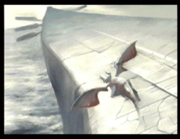

 |
(Ship Report) - Report on Shellcoof
(1/4)
Imperial Age 71, 10th day of 6th month. A scout team inside (2/4) By Imperial Order
pursuit of the flying object (later named (3/4) Soon after the Meccanian scum was dealt with, the scout team gave their report. Before encountering our scout team, Shelcoof suddenly changed course, and attacked a small village, obliterating it with a lightning attack. (4/4) The reason of the
lightning attack remains a mystery, but the village had a Coolia breeding
farm. One theory is that the Coolias somehow drew the Shelcoof to
the village. Report on Missing Teams (1/5) As a result of
the battle with (2/5) Above the forest,
a new type of monster was sighted. Its shape (3/5) But before we could report the new creature, Shelcoof was sighted. In a flash, it completely destroyed our battle squadron. Despite being only one vessel, its overwhelming power decimated every single one of our ships in minutes. (4/5) Reports from the
survivors (5/5) There was a report
that the lone surviving officer that the dragon was also sighted above
Georgius. But his description of the dragon varied considerably from
earlier reports. Speculation was that he officer was hallucinating.
Disappearance of Shelcoof (1/2) Headquarters decided
that further troop losses would seriously (2/2) Shelcoof became the Empire's focus again, but it disappeared. All that was found was a wreckage of something that may or may not have been Shelcoof. If there was a force that could destroy Shelcoof, we would be afraid. |